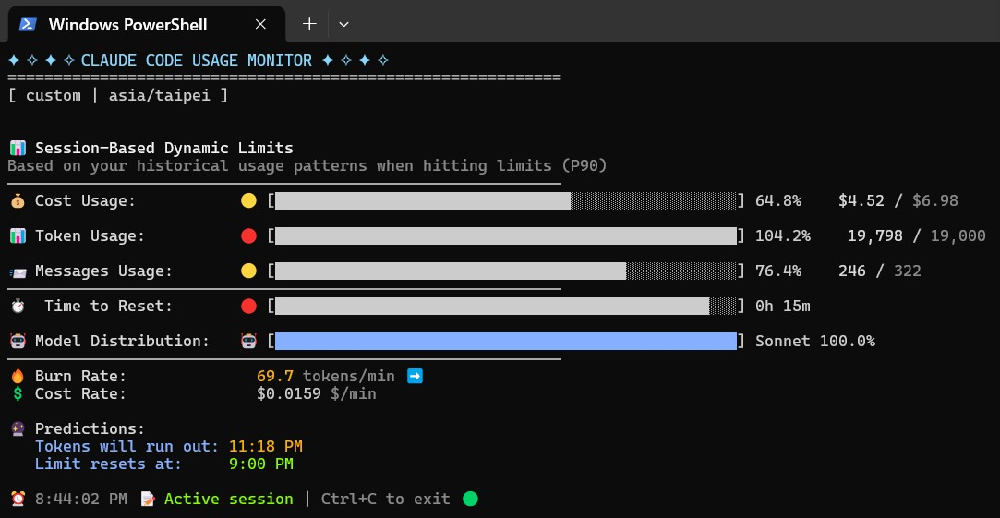
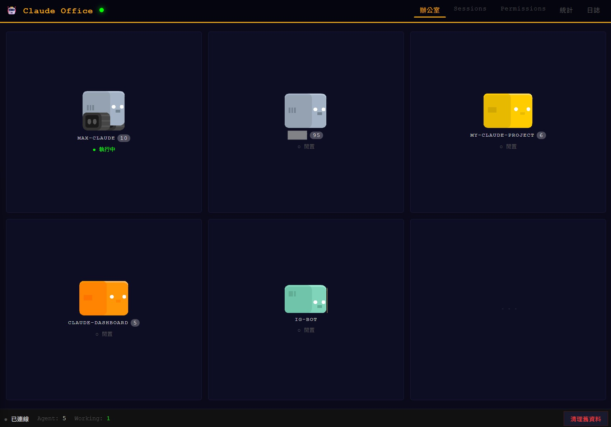
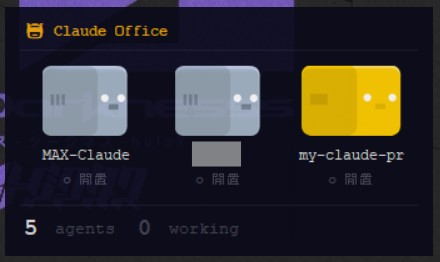
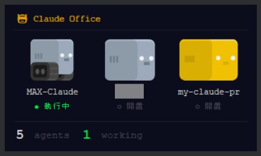
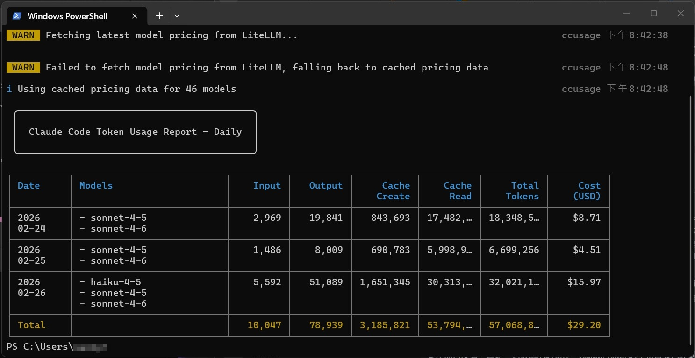
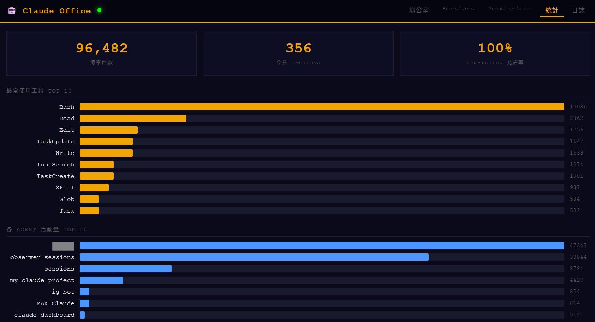

從開源專案改寫經驗出發，釐清 Claude 生態系中 Skills 與 Custom Commands、MCP、Subagents 的本質差異。

前幾日於 GitHub 上發現 Pixel Agents 開源專案——該專案將 AI 代理人的運作視覺化為像素風格虛擬辦公室角色，原始設計聚焦於 AI Agent 運行狀態的監控與管理。經由 Claude 協助改寫，將其調整為可監控本機端各 AI 任務執行情況的小型控制平台。
此改寫過程揭示了一個結構性問題：Claude CLI 與 Claude Code 本質上是為工程師設計的工具鏈，其檔案存放邏輯與機制設定對非技術背景使用者並不直觀。「東西放在哪裡？」「為何如此設定？」成為常見的進入障礙。



Pro 方案下，單純透過問答方式進行開發，Token 消耗速度仍相當可觀。現階段採取的權衡方案為：透過 MCP (Model Context Protocol) 串接 Obsidian，定期自動更新 Markdown 檔案作為專案管理知識庫。此方式使開發過程中的上下文得以有效保存與追溯，避免每次重新建立語境。

反覆嘗試與調整過程中，我發現 Claude 生態系中存在多種「個人化/客製化」機制，但其定位與適用場景經常被混淆。尤其是 Skills 這個概念，與其他機制的本質差異值得深入釐清。
# 生態系機制比較：Skills 與其他工具的架構定位
以下表格整理四種機制的本質差異，有助於開發者精準選擇適用工具：
| 機制名稱 | 觸發方式 | 持久性 | 核心內容 | 載入時機 | 適用場景 |
|---|---|---|---|---|---|
|
Skills
技能
|
AI自動判斷 根據任務描述 | 跨對話 跨專案 |
程序性知識、工作流程 可執行的腳本資源 |
動態載入 依需求 | 需要 Claude 主動應用專業知識的場景 |
|
Custom Commands
自訂指令
|
用戶手動輸入 如 /review-pr | 專案層級 或用戶層級 |
Prompt 範本 單一檔案 | 用戶觸發時載入 | 用戶明確知道要執行什麼固定操作時 |
|
MCP
模型上下文協議
|
工具呼叫 | 啟動時載入 | 連接外部服務的方法 如 API、資料庫 | 按需呼叫 | 需要 Claude 獲取外部資料或操作外部工具時 |
|
Subagents
子智能體
|
Claude自動委派 或手動啟動 |
任務期間 | 獨立運作的 AI 實例 | 需要時建立 | 需獨立上下文、平行處理的複雜拆分任務 |
# 機制的本質定位分析
1. Skills：程序性知識的主動應用
Skills 的關鍵設計差異在於：由 AI「主動判斷」何時使用——採用漸進式揭露 (Progressive Disclosure) 架構，僅在需要時載入相關上下文。使用者無需下達特定指令，Claude 會根據對話任務描述自動呼叫適用的 Skill。
本質上，Skills 是程序性知識的封裝單元，並非單純提示詞模板，而是包含工作流程、判斷邏輯、可執行程式碼腳本的複合資源。其跨對話、跨專案的持久性，使其最適合建構 Claude 的「專業能力庫」。
2. Custom Commands：用戶主動觸發的快捷指令
與 Skills 不同，Custom Commands 必須由用戶手動輸入特定指令（如 /review-pr）觸發。持久性限於專案或用戶層級，內容為單一 Prompt 範本。
此機制適用於「用戶明確知道執行什麼操作」的情境，例如程式碼審查、特定格式文件生成等重複性任務。主動權始終在用戶端。
3. MCP：外部世界的連接橋樑
MCP 的定位明確：連接外部服務的標準化協議，使 Claude 得以透過結構化工具安全存取外部系統與資源。無論是 API 存取、資料庫查詢，或本案例中串接 Obsidian 進行檔案讀寫，MCP 皆是 Claude 與外部世界溝通的通道。
其本質為工具方法的集合，而非知識或流程的封裝——此為與 Skills 最根本的差異：Skills 封裝「怎麼做」的程序知識，MCP 提供「能用什麼外部資源」的連接能力。
4. Subagents：任務並行與上下文隔離
Subagents 設計為解決複雜任務拆分需求。當 Claude 判斷子任務需要獨立上下文或可平行處理時，自動建立 Subagent 執行——子智能體擁有獨立狀態與工具權限，主智能體僅接收與整併最終結果，此架構可顯著降低 Token 負擔，任務完成後即回收。
此為動態建立的運算資源，持久性僅限任務期間。與 Skills 的最大差異：Skills 是「能力」，Subagents 是「執行個體」。
# 實務經驗的初步歸納
從 Pixel Agents 改寫經驗中，歸納出較為清晰的協作模式：
- 1. Skills 用於建構核心能力庫 —— 定義 Claude「具備何種能力」
- 2. MCP 用於連接外部世界 —— 定義 Claude「能存取何種資源」
- 3. Custom Commands 用於標準化重複流程 —— 定義用戶「能快速叫用何種操作」
- 4. Subagents 用於處理複雜拆分 —— 定義任務「能如何平行處理」

現行 Obsidian + MCP 方案，本質上是將外部知識庫（Markdown 檔案）透過 MCP 接入，使 Claude 能在開發過程中持續參考專案文件，無需每次重新餵入上下文。此架構在一定程度上緩解 Token 消耗問題，同時使專案管理更結構化。
# 持續優化中的實驗場
此架構仍在持續調整中。Skills 與其他機制的邊界劃分、Custom Commands 與 Skills 的適用時機、MCP 服務設計的最佳化——皆有待進一步探索。若您也在嘗試類似 AI Agent 開發模式，歡迎交流討論。開源與協作的本質，在於工具與知識的持續演化。
Tool Development & Token Optimization
目前持續開發各類輔助小工具，如有需求可聯繫。
關於 Token 優化，已初步撰寫對應 Skill，後續將釋出。考量 Pro 版帳號限制，預期仍有其他架構層面的優化空間可探討。